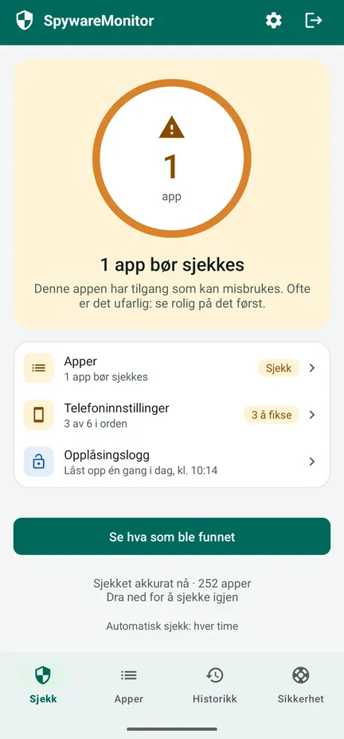
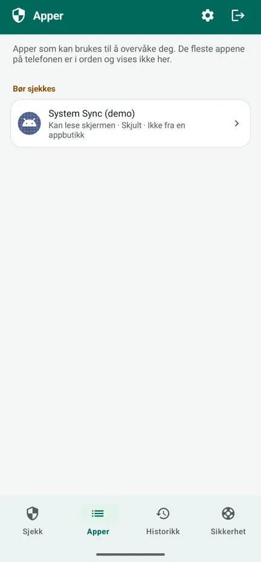
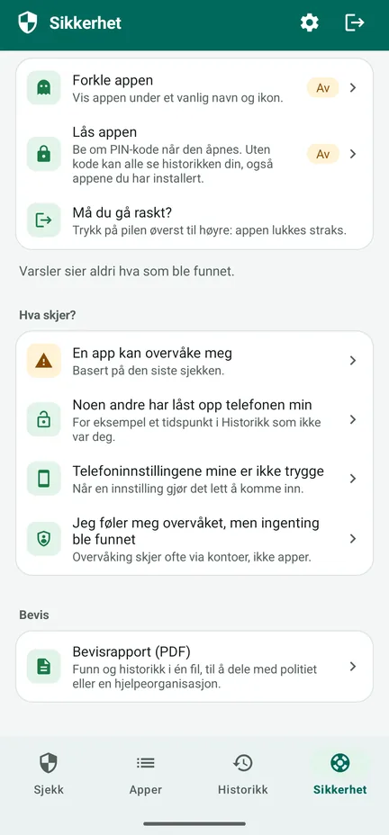
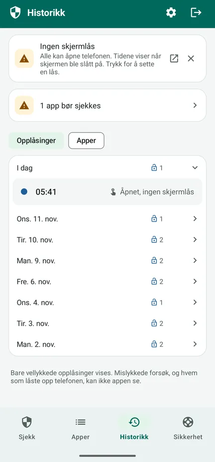

Overvåker noen telefonen din?
SpywareMonitor sjekker hvilke apper på Android-telefonen din som kan brukes til å spionere på deg – og forklarer hvorfor, på vanlig norsk.
For alle som frykter at en partner, en eks eller noen andre følger med på dem i det skjulte gjennom telefonen. Uten internett, reklame eller konto: ingenting forlater telefonen.
Last ned på Google Play Steg for steg
Gratis på Google Play for Android 8 og nyere, med en valgfri engangsoppgradering til Pro. Appen finnes på 10 språk, blant dem norsk.

Kjent stalkerware
132 stalkerware-apper, gjenkjent på navn og signeringssertifikat.
Skjulte apper
Apper uten ikon, eller med et navn som later som det er en del av Android.
Apper som kan overvåke
Apper som leser skjermen eller varslene dine, eller er enhetsadministrator.
Telefoninnstillinger
Ingen skjermlås, USB-feilsøking eller andre innstillinger som gjør det lett å komme inn.
Trygge neste steg
Hva du kan gjøre, i en trygg rekkefølge, så du ikke varsler den andre.
Ingenting forlater telefonen
Ingen internettilgang: ingen reklame, ingen sporing, ingen konto.
Se hvordan den virker
Se omvisningen på 83 sekunder (på engelsk) – hvordan appen sjekker telefonen, hva oransje og rødt betyr og hva du gjør etterpå – eller se skjermbildene. Se på YouTube



Gratis: sjekken
- Sjekker alle apper, og listen over kjent stalkerware
- Oransje: tilgang som kan misbrukes – ofte ufarlig, så ta en titt først. Rødt: kjent stalkerware.
- Årsakene for hver app, og hvem som har laget den
- Telefoninnstillinger, hver med en knapp for å fikse det
- Fanen Sikkerhet: steg for din situasjon, i en trygg rekkefølge
- Rask utgang: pilen øverst til høyre lukker appen med en gang
Pro: én betaling, ikke abonnement
- Automatiske sjekker flere ganger om dagen, med én bryter. Et varsel sier aldri hva som ble funnet – bare navnet på appen og «Trykk for å åpne» – og kan vente en time.
- Opplåsingslogg: når telefonen ble låst opp, så du merker om noen har brukt den
- Historikk: når hvilken app ble installert, fikk tilgang eller ble fjernet
- Bevisrapport (PDF) på appens språk, til å vise politiet eller en hjelpeorganisasjon
- Forkle og låse: vis appen som Notater, Vær, Oppskrifter eller Planlegger, med PIN eller fingeravtrykk
Historikken lagres allerede i gratisversjonen. Kvitteringen fra Google på e-post og ordrehistorikken i Play viser navnet på appen.
Før du fjerner noe
- Å fjerne spionprogrammer kan varsle den som installerte dem. Tenk på sikkerheten din først.
- Ta vare på bevis: bevisrapporten, skjermbilder, eller bilder tatt med en annen telefon.
- Snakk med noen du stoler på, politiet eller en hjelpelinje, helst fra en telefon som ikke overvåkes. De fleste land har en gratis hjelpelinje for vold i nære relasjoner eller overgrep.
- Bytt viktige passord fra en annen enhet.
- Ved akutt fare: ring 112.
Fanen Sikkerhet i appen viser deg veien for din situasjon. Beskytt først selve appen: forkle den og lås den med PIN.
Detaljene
Alt den sjekker
- 132 kjente stalkerware-apper (navn og signeringssertifikat)
- Apper uten ikon i appskuffen
- Tilgjengelighet, varseltilgang og enhetsadministrator
- Apper installert fra en fil eller en annen kilde i stedet for en appbutikk
- Risikable kombinasjoner, som posisjon i bakgrunnen sammen med mikrofon og SMS
- Skjermlås, USB-feilsøking, utvikleralternativer, apper som kan installere andre apper, en telefon som administreres av noen andre
- Tegn på at telefonen er rootet, vises bare når de blir funnet
Personvern du kan kontrollere
SpywareMonitor har ingen internettilgang, så den kan ikke sende noe noe sted. Dataene tas ikke med i skysikkerhetskopien. Listen over kjent stalkerware er bygget inn i appen og oppdateres sammen med den. Personvernerklæring.
Ærlig om begrensningene
Ingen skanner kan love at en telefon er 100 % ren. Apper i en jobbprofil, og spionprogrammer på en telefon som er rootet og godt skjult, kan ikke ses av noen vanlig app. SpywareMonitor sier fra når den finner tegn på rooting. Overvåking kan også skje gjennom kontoer, uten noen app.
Språk og telefoner
10 språk: norsk, engelsk, nederlandsk, tysk, fransk, spansk, polsk, kinesisk, hindi og arabisk. Android 8 og nyere.
Ofte stilte spørsmål
Hvordan ser jeg om det er spionprogrammer på Android-telefonen min?
Se etter apper du ikke kjenner igjen som er skjult i appskuffen, kan lese skjermen (tilgjengelighet) eller varslene dine, er enhetsadministrator, eller ble installert fra en fil i stedet for Play Butikk. SpywareMonitor sjekker alt dette og sammenligner appene dine med en liste over 132 kjente stalkerware-apper.
Sender SpywareMonitor dataene mine noe sted?
Nei. Appen har ingen internettilgang, så ingenting kan forlate telefonen. Ingen konto, ingen reklame og ingen analyse.
Bør jeg fjerne spionprogrammet med en gang?
Å fjerne det kan varsle den som installerte det. Tenk på sikkerheten din først, ta vare på bevis, og snakk med noen du stoler på, politiet eller en hjelpelinje, helst fra en telefon som ikke overvåkes.
Finner SpywareMonitor alle typer spionprogrammer?
Ingen skanner kan love det. Apper i en jobbprofil og spionprogrammer på en rootet telefon kan ikke ses av noen vanlig app. SpywareMonitor er ærlig om dette og viser hva den kan sjekke.
Er SpywareMonitor gratis?
Sjekken, telefoninnstillingene og sikkerhetsstegene er gratis. Pro er én betaling, ikke abonnement, og gir automatiske sjekker med diskré varsler, Historikk, en opplåsingslogg, en bevisrapport som PDF, og forkledning og PIN-lås for appen.
Kan jeg skjule SpywareMonitor på telefonen?
Med Pro kan du forkle appen som Notater, Vær, Oppskrifter eller Planlegger og låse den med PIN. Varslene sier aldri hva som ble funnet. Pilen øverst til høyre lukker appen med en gang. Kvitteringen fra Google på e-post og ordrehistorikken i Play viser likevel navnet på appen.
Jeg føler meg overvåket, men ingenting ble funnet. Hva nå?
Overvåking skjer ofte gjennom kontoer, ikke apper. Slå av posisjonsdeling i Google Maps, sjekk enhetene på Google-kontoen din og gjenopprettings-e-posten og -nummeret, og let etter en skjult sporingsbrikke. Gjør endringer i kontoen fra en annen enhet.
Mer hjelp (på engelsk)
Flere apper fra Nordic Appworks
UpdateMonitor — historikk over alle appoppdateringer, installasjoner og fjerninger på telefonen, med endrede tillatelser. RebootMonitor — når telefonen sist ble startet på nytt. Som SpywareMonitor: uten internett og reklame.
Kontakt
Spørsmål eller tilbakemelding: support@spywaremonitor.app
Listen over kjent stalkerware kommer fra Echaps stalkerware-indikatorer, lisensiert CC BY 4.0.